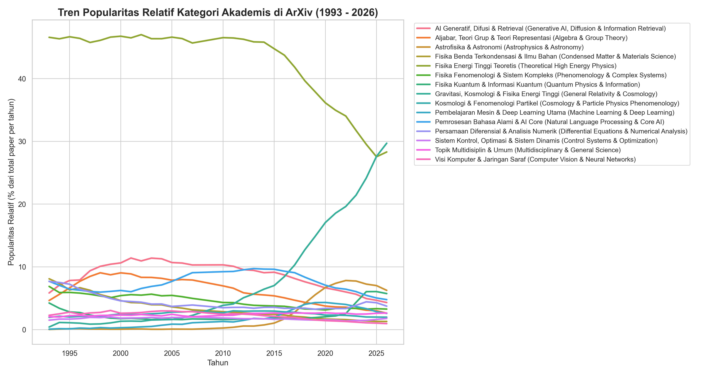
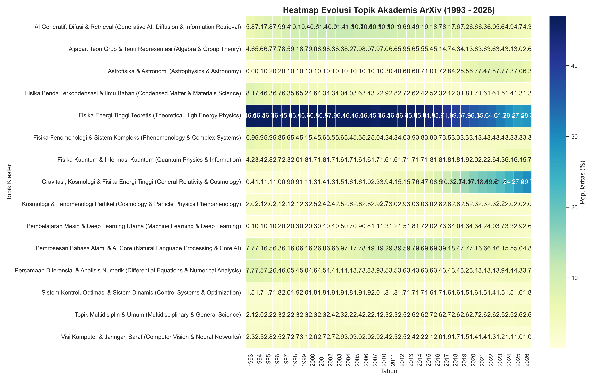
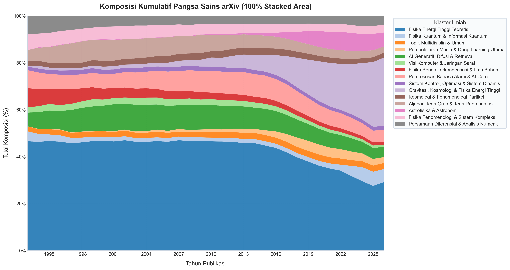
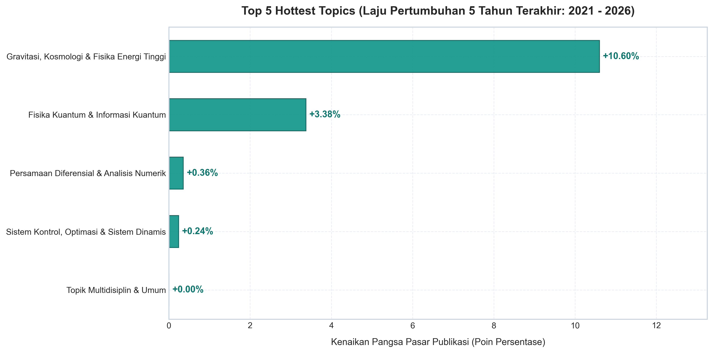
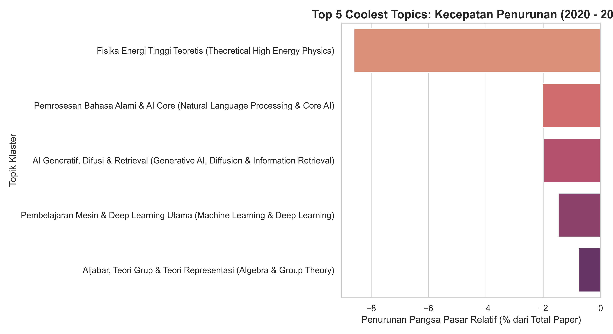
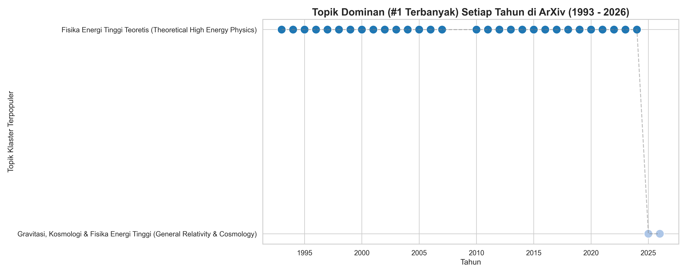
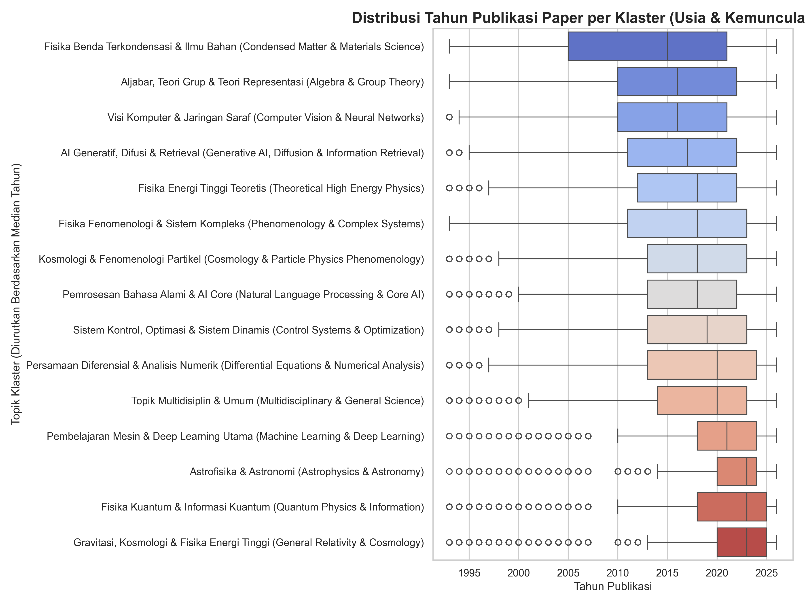
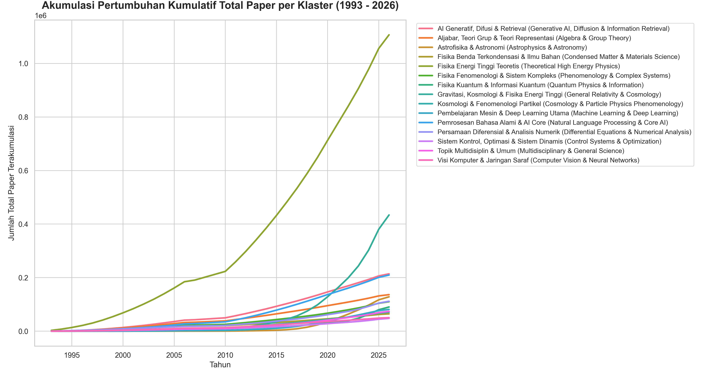

Pilih klaster di sebelah kiri untuk melihat rincian topik ilmiah.
Eksplorasi Topik Penelitian Ilmiah Terbesar
Visualisasi interaktif pengelompokan topik dan tren temporal dari 3.100.507 paper ilmiah di arXiv menggunakan pembelajaran mesin canggih.
3,100,507
Paper Ilmiah di-Cluster
15
Klaster Topik Utama
100k
Sampel Representatif Latih
O(1) RAM
Hemat Memori (Reservoir Sampling)
Alur Kerja Sains Data (Two-Stage Clustering Pipeline)
1
Reservoir Sampling
Stratified sampling hemat RAM untuk mengambil 100.000 paper representatif berdasarkan kategori utama bidang keilmuan arXiv.
2
Weighted TF-IDF
Ekstraksi fitur TF-IDF dari Judul (bobot 2.0) dan Abstrak (bobot 1.0) untuk membentuk matriks fitur berdimensi tinggi.
3
K-Means Model
Klastering tak terarah (K-Means) pada 100.000 sampel dilatih dan disimpan ke disk untuk dimuat ulang secara instan.
4
Batch Inference
Prediksi klaster pada 3M paper sisa dijalankan secara bertahap (batch size 100k) dengan dukungan resume otomatis.
Analisis Tren Akademis Temporal (1993 - 2026)
Analisis pergeseran minat akademis tahunan dan sebaran usia bidang keilmuan yang diekstrak dari ID paper arXiv.

1. Grafik Garis Tren Popularitas Relatif
Menampilkan persentase pangsa pasar relatif untuk 15 klaster topik utama arXiv dari tahun 1993 hingga 2026. Grafik ini menunjukkan dengan jelas perpindahan dominasi dari bidang fisika energi tinggi tradisional ke ilmu komputer dan pembelajaran mesin sejak tahun 2012.

2. Heatmap Evolusi Topik Temporal
Peta panas matriks 2D (Tahun vs Klaster) yang diwarnai berdasarkan persentase popularitas tahunan. Berguna untuk mengidentifikasi "ledakan" intensitas publikasi pada klaster tertentu pada periode waktu tertentu secara instan.

3. Grafik Komposisi Kumulatif Area Bertumpuk
Menyajikan proporsi area akumulatif total seluruh klaster untuk melihat perkembangan keseluruhan portofolio arsip arXiv. Menampilkan pertumbuhan dinamis dari bidang-bidang terapan.

4. Top 5 Hottest Topics (Growth Velocity)
Topik dengan tingkat kenaikan persentase pangsa pasar tahunan terbesar dalam 5 tahun terakhir (2020 s.d. 2025). Mengungkapkan bidang penelitian paling populer dan aktif saat ini seperti AI Generatif dan Deep Learning.

5. Top 5 Coolest Topics (Decline Velocity)
Menampilkan 5 bidang keilmuan yang mengalami penurunan pangsa pasar relatif terbesar dalam 5 tahun terakhir. Ini biasanya mewakili bidang yang mulai mapan atau mengalami pergeseran ke sub-bidang baru.

6. Linimasa Topik Nomor 1 Dominan
Grafik linimasa yang memetakan topik mana yang menjadi kontributor nomor satu terbanyak di arXiv untuk masing-masing tahun terbit, menunjukkan lompatan pergeseran disiplin sains.

7. Distribusi Tahun Publikasi per Klaster
Box plot sebaran tahun publikasi paper di setiap klaster. Membantu membedakan secara instan antara bidang penelitian klasik (sebaran merata sejak 1993) dengan bidang penelitian modern/emerging (sangat padat di tahun-tahun akhir).

8. Grafik Pertumbuhan Kumulatif Total Paper
Menampilkan total volume kumulatif paper yang diarsipkan di arXiv per topik dari tahun ke tahun, menggambarkan pertumbuhan absolut dari ilmu pengetahuan yang terakumulasi.
Prediksi Topik Paper Anda
Masukkan Judul dan Abstrak draf paper ilmiah Anda di bawah. Algoritma klasifikasi heuristik kami akan memprediksi klaster topik yang paling cocok secara langsung.
Hasil Klasifikasi Topik
Masukkan data paper di sebelah kiri lalu klik tombol prediksi untuk melihat hasil analisis topik akademik.
Prediksi Utama
Klaster 07